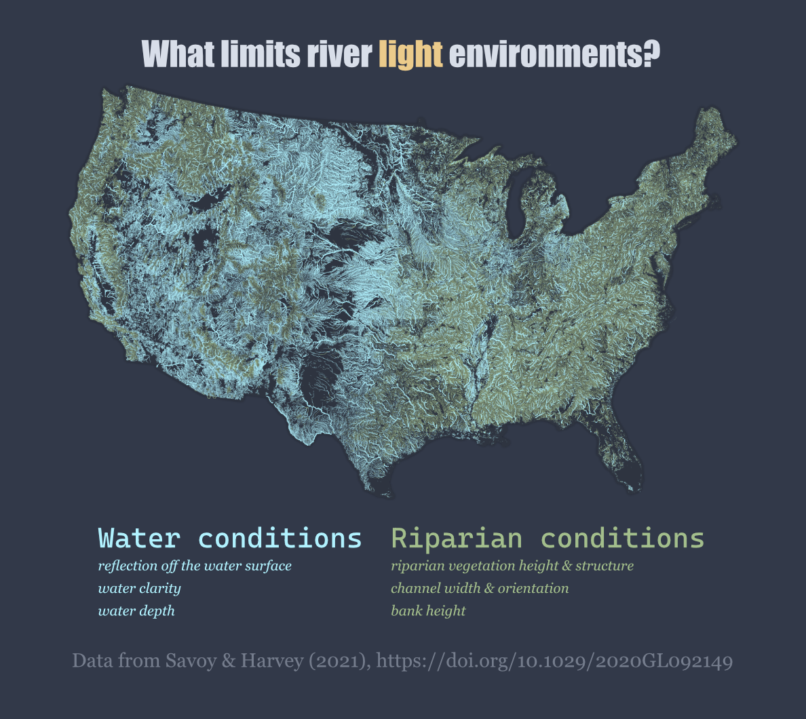
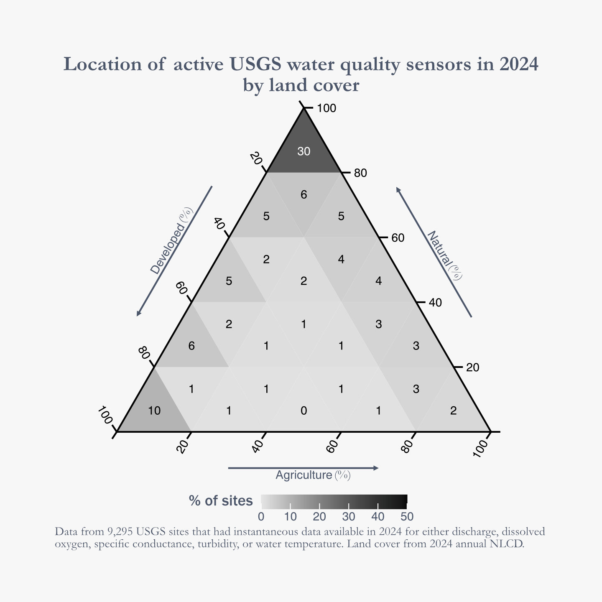
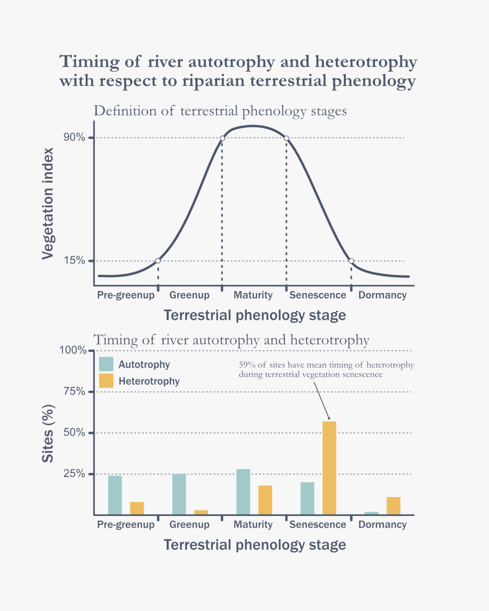

River Light Limitation
Estimates of whether riparian or water conditions most limit river light environments for over 2 million river reaches
Learn more
Timing and Variance of Stream Metabolism
The timing of river autotrophy and heterotrophy across a few hundred rivers.
Learn more

Water Quality Sensor Placement
Placement of USGS water quality sensors in relation to land cover.
Learn more
Average Month with Highest Streamflow
The average month where streamflow was highest for 18,495 streams and rivers.
Learn more
Terrestrial Phenology and River Metabolism
The timing of river autotrophy and heterotrophy in relation to terrestrial vegetation phenology.
Learn more
Modeling Light Limitations to River Productivity
Predicting how riparian zones and water column processes limited productivity
Learn more
StreamPULSE NSF Macrosystems Poster
Overview of the motivation and core components of the StreamPULSE project to better understand patterns and drivers of stream metabolism.
Learn more
AGU 2015 Poster
Predicting rates of forest canopy expansion using leaf functional traits.
Learn more
AGU 2013 Poster
A simple semi-mechanistic model to predict forest phenology using meteorological data.
Learn moreRiver Light Limitation

Description
The conversion of solar energy to chemical energy by primary producers is a fundamental piece of carbon cycling and energy flow within ecosystems, but river autotrophs often only receive a small fraction of incoming sunlight. Lighting conditions within rivers are influenced by many factors including the size and shape of the river itself, surrounding riparian zones, and changing water conditions.
I designed a model predict light available for river primary producers and used the model to infer whether productivity was most limited by riparian zones or water column processes for over 2 million reaches in the US. We found that water column processes most limited productivity for 50% of the nation’s river length and 80% of its surface area.
If you are interested in learning more about this model or our results, you can find our paper here.
Timing and Variance of Stream Metabolism
Description
River ecosystem metabolism is useful for understanding energetics and carbon cycling in flowing waters. Net ecosystem production (NEP) provides information on whether a river is autotrophic (NEP > 0) or heterotrophic (NEP < 0) and carbon dynamics within the ecosystem. Are there any consistent patterns in the timing of autotrophy or heterotrophy?
I used circular statistics to calculate the mean timing of days with positive or negative NEP for a few hundred rivers. Additionally, the coherence (or dispersion) was also calculated to see if the timing of these events was concentrated in a specific time of year for each site.
A total of 44% of sites had a mean timing of autotrophy in summer and another 38% in spring. By contrast, 40% of sites had a mean timing of heterotrophy in summer and 37% in autumn. While summer has high percentages of both autotrophy and heterotrophy, it appears that positive NEP is more likely to happen in the spring and negative NEP in the autumn. This is a simple conclusion in agreement with conceptual understanding of biogeochemical cycling, but useful to see it so clearly highlighted in the data.
Water Quality Sensor Placement

Description
I looked at all active CONUS NWIS sites in 2024 that were recording common water quality measures (discharge, dissolved oxygen, specific conductance, turbidity, water temperature) to see what the surrounding land cover was. 46% of sites were situated in areas where natural land cover was the dominant (>=60 %) class. By contrast, only 9% of sites were located where agriculture was the dominant class.
If you are interested in a deep dive into global bias of stream gauge locations, check out Krabbenhoft et al. (2022) for an excellent analysis.
Terrestrial Phenology and River Metabolism

Description
I used MODIS vegetation dynamics data to get stages of terrestrial phenological development at each site (e.g. greenup or senescence) and determined which stage of development autotrophy and heterotrophy occurred in.
Autotrophy was relatively evenly distributed throughout phenological stages, with about 25% of sites falling into each stage outside of dormancy. By contrast, 59% of sites had their mean timing of heterotrophy occur during senescence. The prevalence of heterotrophy during senescence of terrestrial vegetation could be due to inputs of organic matter in the form of leaf litterfall.
If this topic interests you, Bertuzzo et al. (2022) has a modeling study that looks into different sources of organic matter and river ecosystem respiration rates.
Modeling Light Limitations to River Productivity
Description
I developed a model to predict stream lighting conditions which accounted for reductions in available light from adjacent riparian zones and within the water column.
We used the model to predict river productivity directly from light availability and show how accounting for successive attenuation of light from multiple sources produces productivity estimates which much more closely resemble observed patterns of river productivity.
StreamPULSE NSF Macrosystems Poster
View full image in new tab
Description
This is a poster presented for a meeting of active macrosystems projects at the NSF head office. The collective rates of production and respiration are fundamental ecosystem properties, and when combined are referred to as ecosystem metabolism. Metabolism integrates across many organisms in a stream and provides useful information about energy cycling. This project aimed to compile a large dataset of stream metabolism and perform synthetic analysis across many streams and rivers to identify common patterns of metabolism and link those patterns to likely drivers.
You can learn more about the StreamPULSE project here or explore the data via the data portal.
AGU 2015 Poster
View full image in new tab
Description
Environmental conditions and plant biology interact to produce varied seasonal patterns of leaf development. I found a positive relationship between leaf foliar nitrogen and rates of canopy expansion. I then modeled rates of canopy expansion based only on meteorological conditions and foliar nitrogen at 17 sites across different biomes. Modeled estimates of canopy expansion rates were very strongly correlated to observations for all 93 site-years of data.
AGU 2013 Poster
View full image in new tab
Description
I modified a simple prognostic phenology model to predict the seasonality of leaf area index. The model was tested at 5 sites and modeled estimates were very strongly correlated to observations. This work showed that a simple model was able to predict the timing and magnitude of canopy phenology using only meteorological data and some basic data-driven assumptions about how temperature, light, and water stress limit plant development.